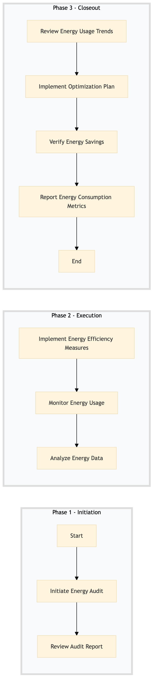

| Role | Steps |
|---|---|
| Facilities Manager | 1.1 1.2 3.1 3.4 |
| Facilities Engineer | 2.1 2.2 2.3 3.2 3.3 |
| Step | Name | Role | System | Input | Output | KPI | Dec? | Exc? | Pain Point / Risk |
|---|---|---|---|---|---|---|---|---|---|
| 1.1 | Initiate Energy Audit | Facilities Manager | Oracle OPERA Cloud | Energy bill data from previous month | Audit report with key findings | < 30 min | N | Y | Inconsistent energy data reporting across different systems |
| 1.2 | Review Audit Report | Facilities Manager | Oracle OPERA Cloud, Microsoft Power BI | Audit report with key findings | Action plan for energy efficiency improvements | < 1 hour | Y | N | Lack of actionable insights from audit data |
| 2.1 | Implement Energy Efficiency Measures | Facilities Engineer | Oracle OPERA Cloud, Schneider EcoStruxure | Action plan for energy efficiency improvements | Updated facility maintenance schedule | < 2 days | N | Y | Coordination between different departments for implementation |
| 2.2 | Monitor Energy Usage | Facilities Engineer | Oracle OPERA Cloud, Schneider EcoStruxure | Updated facility maintenance schedule | Real-time energy consumption data | < 15 min | N | Y | Inaccurate or delayed energy readings |
| 2.3 | Analyze Energy Data | Facilities Engineer | Oracle OPERA Cloud, Microsoft Power BI | Real-time energy consumption data | Energy usage trends report | < 1 hour | Y | N | Difficulty in analyzing large volumes of energy data |
| 3.1 | Review Energy Usage Trends | Facilities Manager | Oracle OPERA Cloud, Microsoft Power BI | Energy usage trends report | Optimization plan for further energy savings | < 1 hour | Y | N | Lack of clear optimization strategies based on data analysis |
| 3.2 | Implement Optimization Plan | Facilities Engineer | Oracle OPERA Cloud, Schneider EcoStruxure | Optimization plan for further energy savings | Updated facility maintenance schedule | < 3 days | N | Y | Resistance to change from staff or technical challenges |
| 3.3 | Verify Energy Savings | Facilities Engineer | Oracle OPERA Cloud, Schneider EcoStruxure | Updated facility maintenance schedule | Energy savings report | < 15 min | N | Y | Inability to measure the impact of optimization efforts |
| 3.4 | Report Energy Consumption Metrics | Facilities Manager | Oracle OPERA Cloud, Microsoft Power BI | Energy savings report | Monthly energy consumption metrics report to senior management | < 1 hour | N | N | Lack of visibility into energy consumption for decision-making |
A process to monitor and manage energy consumption in a full-service Marriott hotel using Oracle OPERA Cloud PMS and other integrated systems.